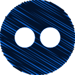
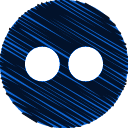
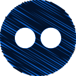
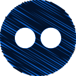

 

Ben (Ursus maritimus) aynı zamanda beyaz ayı, ya da deniz ayısı, ayıgiller (Ursidae) familyasından
soğuk kuzey kutup bölgesinin karlı sahillerinde ve buzullar üzerinde yaşayan ayı türüyüm.
Yaşamakta olan en büyük kara etoburum (boz ayı daha büyüktür ama bir Karnivor değil omnivor sayılmaktadır)
ve bulunduğum ortamdaki süper yırtıcıyım.
Yaşadığım çevreye çok iyi uyum sağlamış durumdayım.
Kalın kürküm beni soğuktan korur, beyaz görünümüm avlarımdan saklar.Ben hem karada,
hem denizde, hem buzda, hem de su içinde rahatlıkla avlanırım.
En çok balık ve foklarla beslenirim.
Aç kaldığım zamanlarda yüzen buz parçaları üzerine binip kilometrelerce uzaklara giderek besin ararım.
Fok balıklarının buz tabakasındaki soluk alma deliklerinde pusuya yatarım.